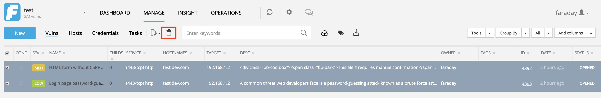

Troubleshooting
Intro¶
This guide is intended to provide solutions for common problems. If your problem is not listed below, make sure to contact us!
Before moving on, verify that you are using the latest available version running the Client and the Server using --version or -v.
To get the latest available version visit GitHub
We recommend upgrading to the latest version before proceeding.
Also, to get a better understanding of most problems you can run the Faraday Client using --debug or -d option.
Traceback Troubleshooting¶
For traceback troubleshooting you need to open the Faraday logs and search for the string ERROR. Logs are located on /home/faraday/.faraday/logs.
In this section we will show common errors and possible solutions. We recommend to search part of the error in this page and try to match the error with possible solutions.
Index¶
- I can't access the Web GUI
- Faraday is not importing my report
- A plugin added too much information to my database
- How to reset Faraday Server password
- Can't access Faraday Server remotely
- [Errno 2] No such file or directory: '/home/USERNAME/.faraday/config/config.xml'
- Updating Nginx Configuration
- Error while backing up the database
- No ports available
- UnicodeEncodeError: 'ascii' codec can't encode character
- Database encoding incompatibility executing initdb
Answers¶
I can't access the Web GUI¶
Is Faraday Server running? Try running:
$ faraday-manage status-check
$ faraday-server
Faraday is not importing my report¶
First let's make sure there is a Plugin to parse it so make sure your tool is listed in our [[Plugin List]]. Not there? Code your own or ask us to do it.
You can also try to force Faraday to process a report with a certain plugin. For example, let's say you have a Metasploit report that Faraday is not detecting. You can change the report so that it ends with _faraday_Metasploit (first letter of the plugin in uppercase), so it ends up as myreport_faraday_Metasploit.xml, and then copy it to /home/faraday/.faraday/reports/{workspacename} in the Client. This of course works for any plugin, not only Metasploit.
Keep in mind that Plugins don't run on the Server, so if you're trying to copy the report file, make sure you're doint it on the Client.
A plugin added too much information to my database¶
You can go to your Status Report in the Web GUI, filter the vulnerabilities by whichever parameter you'd like, select them all and then click on Delete to remove them form the database.

How to reset Faraday Server password¶
If you forgot the password, or you don't know your Faraday Server password, you can use the command faraday-manage to change it:
$ faraday-manage change-password
Can't access Faraday Server remotely¶
In your Server machine, go to /home/faraday/.faraday/config/server.ini and check if you're listening only on the localhost. You should see something like this:
[faraday_server]
port=5985
bind_address=localhost
If your Clients are on different machines than the Server, then you'll need to change the bind_address to your private IP (or all your interfaces). For example:
bind_address=0.0.0.0
Updating Nginx configuration¶
Note: This only applies if you are using Nginx and https.
Please, make sure you have this settings on your Nginx config:
1 2 | |
Error while backing up the database¶
If you get this error:
“pci_q1” failed: FATAL: role “root” does not exist
while trying to execute:
pg_dump <name of workspace> > <name of what I want the backup file to be>
Run:
sudo -u postgres -i
And then try again.
No ports available¶
If you see this traceback:
Traceback (most recent call last): File "/usr/share/python-faraday/model/application.py", line 145, in start CONF.getApiRestfulConInfoPort() File "/usr/share/python-faraday/apis/rest/api.py", line 67, in startAPIs raise Exception("No ports available!") Exception: No ports available!
Go into the file user.xml locates in /home/USERNAME/.faraday/config/
~
Change localhost for 127.0.0.1 and try again.
UnicodeEncodeError: 'ascii' codec can't encode character¶
If you see a Traceback that ends something like this:
UnicodeEncodeError: 'ascii' codec can't encode character u'\xf3' in position 1: ordinal not in range(128)
Go into your Faraday folder and run the following command:
1 | |
Once inside the shell execute:
SHOW SERVER_ENCODING
If you are using symbols not supported by ASCII, you need to change database's encoding to UTF-8. 1. Dump your database 2. Drop your database, 3. Create new database with the different encoding 4. Reload your data.
Make sure the client encoding is set correctly during this process.
Database encoding incompatibility executing initdb¶
If you got the following error when running the command faraday-manage initdb:
ERROR: createdb: database creation failed: ERROR: new encoding (UTF8) is incompatible with the encoding of the template database (SQL_ASCII)
HINT: Use the same encoding as in the template database, or use template0 as template.
You can follow the instructions provided in this link.
Once you get the solution above, you can try to initialize the database once more:
faraday-manage initdb
Is your question not listed here? Contact us
SMTP is not being saved from the UI¶
For this is needed to update manually the configuration on the server side.
faraday-manage settings -a update smtp
properly set the configuration needed, actually faraday doesn't support accounts without password/user.
LDAP reconfigure after Faraday 3.15.0¶
As part of the constant grow there were introduced new security rules on LDAP and as a consequence when upgrading Faraday to 3.16 it LDAP needs to be reconfigured.
Steps to do it:
faraday-manage settings -a update ldap
Then update every field according to the on-prem configuration .
$ faraday-manage settings -a update ldap
Update settings for: ldap
enabled [False]:
use_local_roles [True]:
default_local_role [admin]:
admin_group []:
asset_owner_group []:
client_group []:
pentester_group []:
disconnect_timeout [2.0]:
server []:
port [389]:
use_ldaps [False]:
use_start_tls [False]:
domain []:
domain_dn []:
bind_format [CN]:
bind_dn []:
user_class [user]:
user_attribute [sAMAccountName]:
group_class [group]:
paginated_fetch [False]:
Do you confirm your changes on ldap?
----------------------
enabled: False
use_local_roles: True
default_local_role: admin
admin_group:
asset_owner_group:
client_group:
pentester_group:
disconnect_timeout: 2.0
server:
port: 389
use_ldaps: False
use_start_tls: False
domain:
domain_dn:
bind_format: CN
bind_dn:
user_class: user
user_attribute: sAMAccountName
group_class: group
paginated_fetch: False
[Y/n]:
my reports disappeaered after activating markdown¶
remember that markdown reports are stored at:
Generic:
~/.faraday/executive_reports_templates/markdown_generic
/.faraday/executive_reports_templates/markdown_grouped